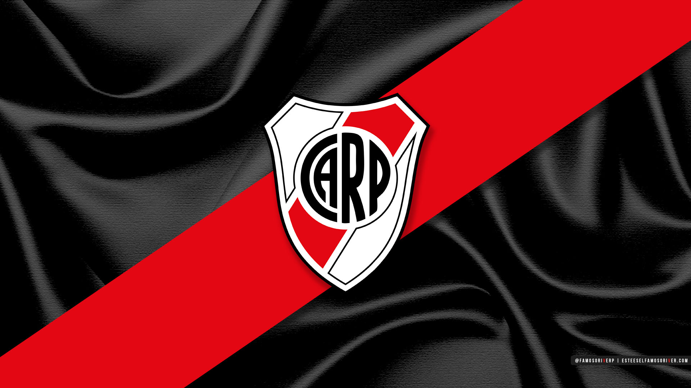

bienvenidos a clubs de futbol Argentino
Bienvenidos, los invito a conocer mi pagina donde van a aprender diferentes cosas sobre el futbol argentino.
Club Atletico River Plate
El Club Atlético River Plate, más conocido simplemente como River Plate, es una entidad polideportiva con sede en Buenos Aires, Argentina.? El club fue fundado el 25 de mayo de 1901 en el barrio de La Boca, tras la fusión de los clubes Santa Rosa y La Rosales.
Club Atletico Boca Jr
El Club Atlético Boca Juniors es una entidad deportiva argentina con sede en el barrio de La Boca, Buenos Aires. Fue fundado en dicho barrio el 3 de abril de 1905 por seis vecinos adolescentes hijos de italianos.
Club Atletico Talleres
El Club Atlético Talleres es una institución deportiva con sede en la ciudad de Córdoba, Argentina. Su principal actividad es el fútbol y también se practican el hockey, vóley, balonmano, patín artístico, karate, futsal y básquet en la institución. Fue fundado el 12 de octubre de 1913 y participa en la Primera División de Argentina.